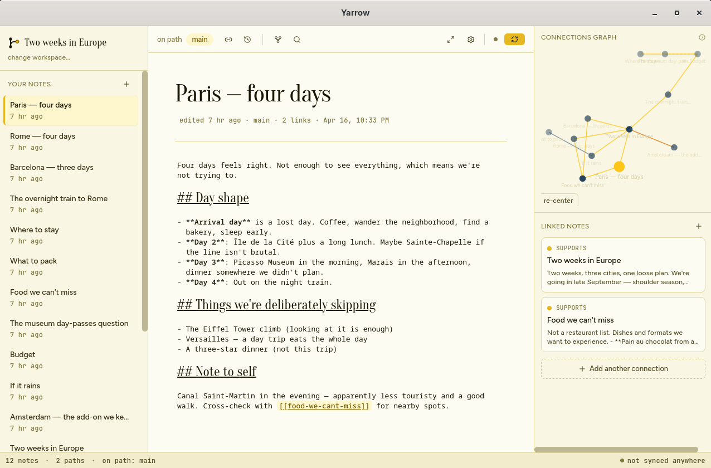
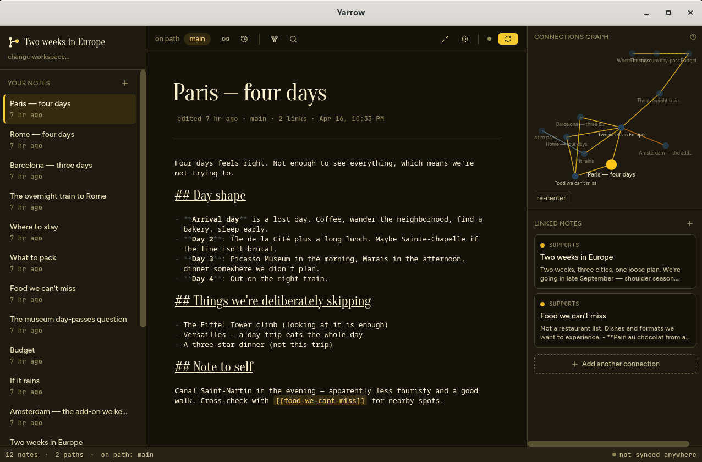
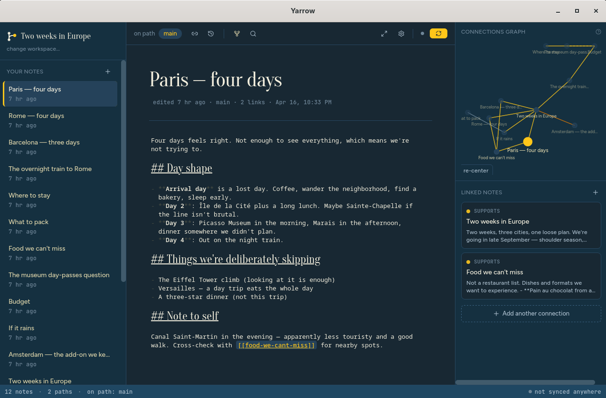

A local-first desktop note app built around the way thinking actually
works — non-linear, branching, and never lost. Your notes are plain
markdown files in a folder. Every change is preserved. Every direction
you explored stays in an archive, not the trash.
macOS · Linux (AppImage · .deb · .rpm) · Windows · ~15 MB binary



Yarrow in the warm cream theme —
click to enlarge, or pick a palette
in the top-right.
Thinking is non-linear. Your notes should be too.
Most note tools treat a document as a single, authoritative version — and
every time you change your mind, you either paper over the old thought or
lose it. Yarrow doesn't. Every save is a checkpoint. Every time you want
to try a different take on an idea, you open a new direction, and
the original stays exactly where it was. You can always switch back.
Under the hood, Yarrow is git. At the surface, there is no git anywhere —
no commits, no branches, no HEAD. Just your writing, paths you can fork
and return to, connections you can draw between ideas, and a quiet sense
that nothing you write can be lost.
New in 0.2.0
Deeper, not broader.
Four features that lean further into non-linear thinking — plus the polish
to make Yarrow feel finished.
01
Daily notes, on their own stream
A Today pill in the sidebar, a journal folder at
notes/daily/, and the shortcut
⌘T/Ctrl+T. Daily entries always live on
main so your journal doesn't split when you're off exploring
a path.
02
Hover a [[wikilink]], see the note
Transclusion preview in the editor — a themed popover with title and
excerpt appears after a short pause. Clicking still navigates;
hovering never gets in your way.
03
Drop-in attachments
Drag images or paste screenshots into the editor. Files land in
attachments/, content-addressed by hash, previewed inline
as real images — not just markdown source.
04
Static-site export
Turn your workspace into a self-contained HTML folder with a
table of contents and a D3 force-directed graph. Share a link, email
a zip, or host it anywhere.
When you want to try a different angle on a note, open a
direction. The original stays untouched. Switch back any time.
◷
Silent auto-save
No save button, no panic. Every pause in your typing is a checkpoint
you can scrub back to — even versions from weeks ago.
Typed connections
Link notes by meaning — supports, challenges,
came from, open question. Reverse links are
added automatically.
A living graph
Every note you connect lights up in a force-directed graph. Drag to
explore; related notes highlight on hover.
Daily notes
One markdown file per day at notes/daily/. Jump to today
with ⌘T/Ctrl+T. Always lives on main, never splits.
Drop-in attachments
Drag files or paste screenshots. Content-addressed storage,
inline image preview. No config, no asset plumbing.
⌕
Command palette & quick switch
⌘K/Ctrl+K to do anything. ⌘O/Ctrl+O
to fuzzy-jump. The mouse is optional.
??
Open questions
Write ?? followed by a question anywhere, and it shows
up in a dedicated panel. Unresolved tensions don't disappear.
Static-site export
Ship your workspace as a self-contained HTML bundle — notes,
attachments, and a D3 graph. Open it in any browser.
.md
Plain markdown, forever
Your notes live as .md files in a folder you choose. Open
them in any editor. No lock-in, no proprietary format.
↑↓
Sync anywhere git runs
Point Yarrow at any git remote — GitHub, Gitea, a bare server. One
button in the toolbar. Your tokens never leave your machine.
Three themes, three moods
Warm cream, warm dusk, and the new Blueberry + Yellow palette —
deep navy with amber accents. Pick one up top to preview it here.
The mental model, in three pieces
Notes
Just markdown files. One per idea. Open, edit, close. Yarrow saves
silently while you write.
Paths
When you want to try a different take on a note — or on the whole
workspace — open a new direction. The old version stays safe.
You can switch, or bring two paths back together.
Connections
Link notes by meaning, not just by clicking. As the graph fills in,
the shape of your thinking becomes visible — dangling questions
included.
Principles
Nothing you write is ever lost. Every change is a
checkpoint. Abandoned paths are an archive, not the trash.
Plain text, forever. Notes are .md files.
Git is invisible infrastructure — not a UI you have to learn.
Local-first. Yarrow works fully offline. Sync to a
remote you own, or don't.
The UI vocabulary is human. No commits, branches,
HEADs, or merges. Just paths, checkpoints, and directions.
Complexity lives in the backend. The app is a Rust
binary under ~15 MB with no bundled Chromium.
No account, no telemetry. Yarrow never phones home.
We don't even know you're using it.
Download Yarrow 0.2.0
Free, open source, and built to stay out of your way. Pick your platform —
or grab the source and build it yourself.